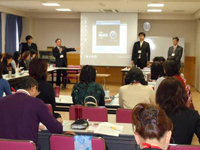
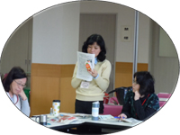
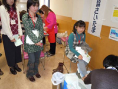

【日 時】
4月19日(月)10:30～14:00
【場 所】
さいたまコープコーププラザ浦和３階会議室
【出席者】
35人(さいたまコープ19・ドゥコープ２・住宅生協２・勤労者生協２・さいたま高齢協２・医療生協さいたま２・事務局１)
健康チェックお手伝い：５人（医療生協さいたま）
■
ミニ学習
「県営水道の水質管理」 講師：埼玉県企業局水道施設課・埼玉県水質管理センター
＜要 旨＞
（１）
ＤＶＤによる｢水｣についての学習と濁りを取る簡易実験。

（２）
水道水は水道法により規定。清浄・豊富低廉な水を供給。
（３）
県営水道の施設能力は266万5千･3/1日で全国1位。
また、全国23府県営用水供給事業対のうち３番目に安価。
（４）
県営浄水場は県内５ヵ所あり秩父地域を除く市町村に供給。
（５）
新三郷浄水場は、高度浄水施設に変わりオゾン処理を開始。
■
交流
さいたまコープ、ドゥコープ、医療生協さいたま、さいたま高齢協、さいたま住宅生協、埼玉県勤労者生協の今年度の取り組みを発表し交流を深めました。
■
審議事項
（１）
生協ネットワーク協議会2009年度まとめ(案)と2010年度方針(案)について
（２）
第55回埼玉母親大会の役割分担では、来賓受付を担当することが確認されました
（３）
第46回埼玉県消費者大会・日本母親大会in福島の開催について

■
お薦め商品紹介
さいたまコープからロングライフクリームデニッシュ、ドゥコープからおやつソーセージ、勤労者生協からキャロっとさん(ジュース)の商品説明がありました。
■
健康チェック
医療生協さいたまの協力により、血圧・尿検査・血管年齢・骨密度の測定を行いました。
